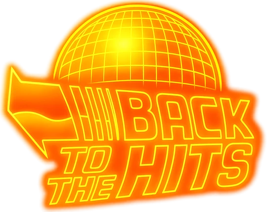

Back to the Hits, Baby! Sammle CDs und spring über all die Boxen, Nokias und Tamagotchis. Je weiter du rennst, desto mehr Back to the Hits. Schaffst du's zurück in die 80er?
Mach ein Screenshot von deinem Highscore und komm am 14.11. im Gerolds Garten beim DJ-Pult vorbei. Für die ersten 10 gibt es eine kleine Überraschung.
Rekord: 0 CDs

Das Game zur PartyHol dir die Hits am 14.11. im Gerolds Garten Choose your DJ